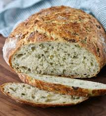

Italian Herb Bread Recipe

Bring the taste and smell of italy to your kitchen.
- 500g strong bread flour
- 7g- a handful of yeast
- Pinch of salt
- 150ml luke warm water
- 150ml olive oil- plus a little extra for greasing
Steps
- Tip the flour into a bowl and mix in the yeast and salt. Create a well with your hands or the back of the spoon at the bottom of the bowl. Measure out 150ml of both water and oil and stir half of the liquid.
- Now bring together to make a soft dough- adding what is left of the liquid when needed. I normally use my hand for this bit but a knife or wooden spoon is fine. Tip onto a lightly floured surface and knead for ten minutes- if the bread mix is sticky put flour on your hands. Don't worry if your dough is a bit on the wet side.
- Oil the bowl you used for the flour and place your dough in the centre- Add a little drizzle of oil over the dough itself as this helps it prove. Cover with cling film- making sure it tightly stretched across the top of the bowl to not let any hot air out and leave in a warm place for 1-2 hrs or till it has doubled in size. Use a spatula to scrape the dough back onto the floured surface you used earlier. Knock back the dough and knead for a further 5 minutes adding the herbs as you go- you can use different herbs then the ones suggested!
- Place the dough on a baking tray or if you want a proper loaf shape-a loaf tin! and again cover the tray in cling film and leave in a warm place till it doubles in size. When it has done this, uncover and bake your bread at 180C/160 fan/gas 6 for 15- 20 minutes till hollow. Allow the bread to cool for at least 5 minutes before you try to cut or taste the bread.
Home